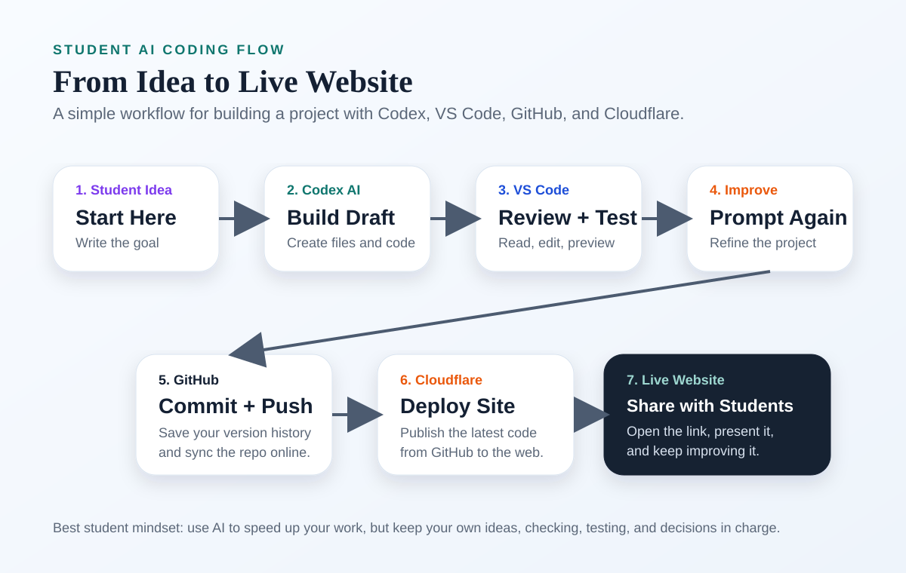

AI Coding Partner
Use Codex to create files, improve designs, explain code, fix bugs, and speed up your work.
- Give a clear idea or goal.
- Ask for one task at a time.
- Check the result instead of trusting blindly.
AI Coding Guide
This page shows a simple student workflow for turning an idea into a real website using Codex, VS Code, GitHub, and Cloudflare. The goal is not to make AI do everything for you. The goal is to use AI as a coding partner while you guide the idea, test the work, and publish the result.
This visual shows the full path from student idea to live website.

Each tool has a clear job in the coding and deployment process.
Use Codex to create files, improve designs, explain code, fix bugs, and speed up your work.
Use VS Code to view files, organize folders, read changes, and run or preview your project.
Use GitHub to save versions of your project, track progress, and push updates online.
Use Cloudflare to publish the site so other students can open it in a browser.
Students can use these official links to start setting up their own coding workflow.
VS Code is the editor where students can open files, read code, test ideas, and preview websites while working with Codex.
Official VS Code DownloadGitHub stores your project online, keeps version history, and makes it easy to push code and share your work with others.
GitHub Sign Up Download GitHub DesktopCloudflare can deploy a GitHub project to a live website, which makes it a simple way for students to publish web projects.
Cloudflare Sign UpThese are the basic steps students can follow when building a project with AI.
Write one short sentence about what you want to build. Example: “I want a website that explains weather and climate news for students.”
Ask Codex to create a page, add sections, design the layout, or explain what files are needed.
Read the files, make edits, test the design, and check whether the page actually matches your idea.
Tell Codex exactly what to improve, such as wording, colors, examples, or mobile layout.
Commit your work using a short message like Add student AI coding guide, then push it to GitHub.
Cloudflare can publish the site from your GitHub repo so your project becomes a real live website.
A short version students can remember when building a web project.
Create or update files such as index.html, style.css, and script.js. Ask Codex for help, but always read what changed.
Open the page, click the links, test on mobile size, and make sure the words and design feel right for students.
Use Git to commit and push your latest version. This gives you a clean project history and a backup online.
Connect Cloudflare to the repo, choose the project folder if needed, and let Cloudflare deploy the newest code automatically.